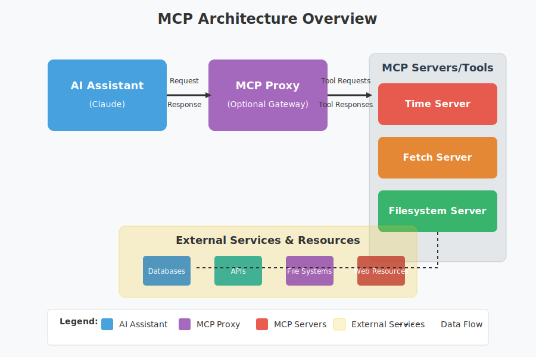

Getting Started with MCP
Lab 1: Learn the basics of Model Context Protocol and set up your first MCP server
Introduction to Model Context Protocol (MCP)
The Model Context Protocol (MCP) is an open standard that provides a universal way to connect AI models and agentic applications to various data sources and tools. It enables AI models to interact with external systems and data, expanding their capabilities beyond what's possible with just prompting.
What is MCP?
MCP follows a client-server model with clear separation of roles. An MCP Host (the AI application or agent) connects via an MCP Client library to one or more MCP Servers. Each server exposes a specific set of capabilities (such as reading files, querying a database, or calling an API) through a standardized protocol.
MCP Architecture showing the Host, Client, and Servers
This is why people often refer to MCP as the "USB-C port for AI applications" - it creates a standardized interface for AI models to interact with external tools and data sources.
Key Concept: MCP Components
- MCP Host: The AI application or agent that needs to use external tools
- MCP Client: Library that handles communication between the host and servers
- MCP Servers: Components that expose specific capabilities through the protocol
Security Architecture in MCP
By design, the MCP architecture introduces security boundaries: the host and servers communicate only via the MCP protocol, which means security policies can be enforced at the protocol layer. For example, an MCP server can restrict which files or database entries it will return, regardless of what the AI model requests.
This clear delineation of components makes it easier to apply the Zero Trust principle (treating each component and request as potentially untrusted until verified).
Security Considerations
When AI assistants gain access to sensitive files, databases, or services via MCP, organizations must ensure those interactions are secure, authenticated, and auditable. MCP should always be implemented with proper authentication, authorization, and monitoring.
Prerequisites
Before you begin, make sure you have the following installed and ready:
- Docker installed on your machine
- Basic familiarity with command line interfaces
- A text editor of your choice
- An API key for Claude (or other AI model that supports MCP)
Step 1: Setting Up Your Environment
Create Your Project Directory
Start by creating a new directory for your MCP project:
mkdir my-first-mcp
cd my-first-mcpCreate a Docker Compose File
Create a docker-compose.yml file in your project directory:
version: '3'
services:
mcp:
image: anthropic/mcp-proxy:latest
ports:
- "8080:8080"
environment:
- MCP_API_KEY=${MCP_API_KEY}
- CLAUDE_API_KEY=${CLAUDE_API_KEY}
volumes:
- ./config:/app/configCreate Your Configuration Directory
Create a config directory and a basic tool configuration file:
mkdir config
touch config/tools.jsonDefine Your First Tool
Edit config/tools.json to include a simple time tool:
{
"tools": [
{
"name": "time",
"service": "time",
"description": "Gets the current date and time",
"schema": {
"type": "function",
"function": {
"name": "time",
"description": "Gets the current date and time",
"parameters": {
"type": "object",
"properties": {
"timezone": {
"type": "string",
"description": "Optional timezone (e.g., 'UTC', 'America/New_York')"
}
},
"required": []
}
}
}
}
]
}Step 2: Running Your First MCP Server
Start the MCP Server
Set your API keys as environment variables and start the Docker container:
export MCP_API_KEY=your_mcp_api_key
export CLAUDE_API_KEY=your_claude_api_key
docker-compose up -dVerify the Server is Running
Check if your MCP server is running correctly:
curl http://localhost:8080/healthzYou should see a response indicating the server is healthy.
Troubleshooting Tips
- If you encounter connection issues, ensure Docker is running properly
- Check that your API keys are correctly set in your environment
- Verify that the ports are correctly exposed in your docker-compose file
Step 3: Creating Your First MCP Conversation
Using the MCP Server in Your Application
Now, let's create a simple Python script to interact with your MCP server:
import requests
import json
API_KEY = "your_claude_api_key"
MCP_URL = "http://localhost:8080/v1/messages"
headers = {
"x-api-key": API_KEY,
"Content-Type": "application/json"
}
conversation = {
"model": "claude-3-opus-20240229",
"messages": [
{"role": "user", "content": "What time is it right now?"}
],
"tools": [
{
"name": "time",
"description": "Gets the current date and time"
}
]
}
response = requests.post(MCP_URL, headers=headers, json=conversation)
result = response.json()
print(json.dumps(result, indent=2))Run Your Script
Save this code to a file named mcp_test.py and run it:
python mcp_test.pyYou should see a response from Claude that includes the current time, which it retrieved using the time tool via MCP.
Understanding What Happened
In this example, the AI model recognized the need for current time information and used the time tool to retrieve it. The MCP server handled the tool invocation and returned the result to Claude, which then incorporated it into its response.
Key Takeaways
- MCP provides a standardized way for AI models to access external tools and data sources
- The client-server architecture of MCP creates clear security boundaries
- Setting up an MCP server involves configuring Docker, defining tools, and connecting to an AI model
- Tools are defined with JSON schemas that specify their parameters and functionality
- MCP enables AI models to perform actions they couldn't do on their own, like retrieving real-time data
Next Steps
Now that you've set up your first MCP server and tool, you can:
- Try adding more tools to your configuration
- Experiment with different queries to Claude that would trigger tool use
- Move on to Lab 2 to learn about creating custom MCP servers